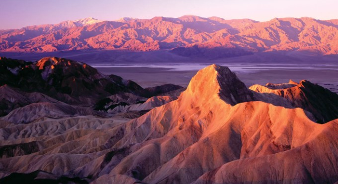

Death Valley National Park, located in eastern California, is a vast expanse known for its extreme temperatures, diverse landscapes, and being the lowest point in North America!
National parks protect our environment and history for future generations. We can raise awareness by
educating people and promoting responsible visits to these parks.